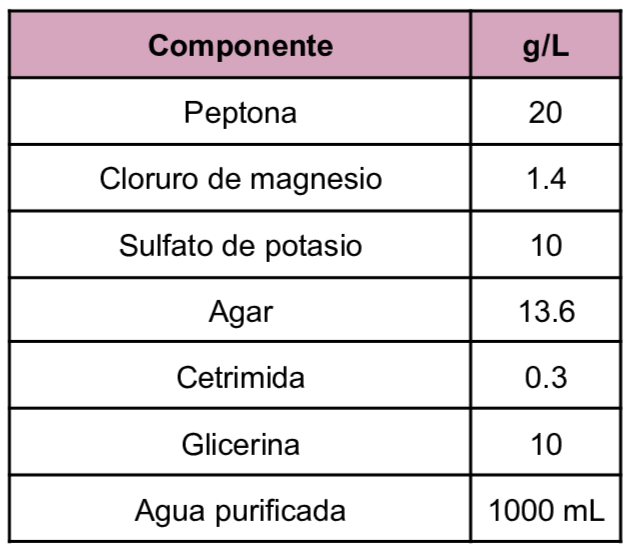
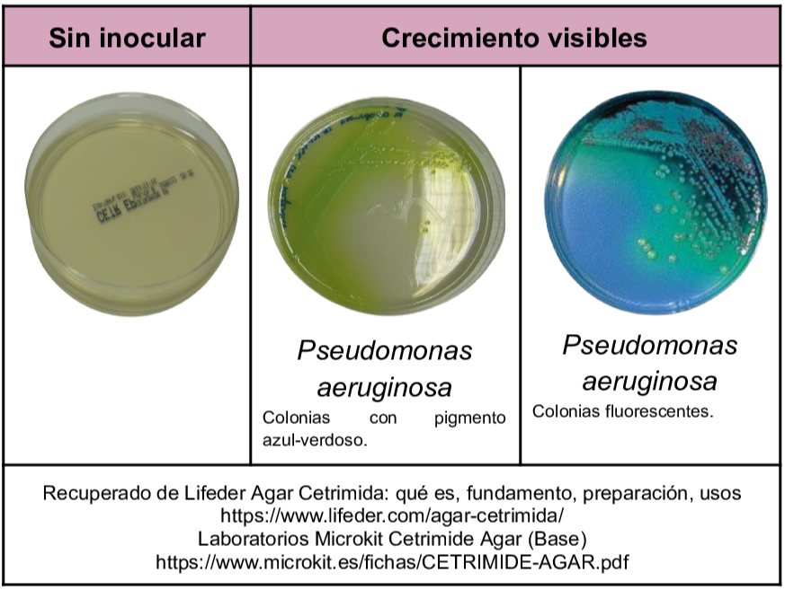

Es un medio de tipo selectivo y diferencial que es utilizado para el aislamiento e identificación de
Pseudomonas aeruginosa
de muestras clínicas, ambientales e industriales.
Dentro de su composición se encuentra la cetrimida que inhibe el crecimiento de bacterias acompañantes en la muestra ya que es un detergente catiónico además el cloruro de magnesio y sulfato de potasio estimulan la producción de diversos pigmentos tales como la piocianina, pioverdina, piomelanina y fluoresceína.
Composición

pH a 25°C 7.2±0.2
Resultados Posibles
Se presenta crecimiento de colonias que varían a amarillo verdosos a azul.
La variación en olor se debe al pigmento que produce la bacteria por lo que si se observa color:
Verde-azulado se debe a producción de piocianina
Verde corresponde a pioverdina
Rosa claro, rojizo o marrón de debe a la piorrubina
Bajo luz ultravioleta se evidencia la producción de fluoresceína, se observa color anarillo verdoso brillante.

Referencias
Britania (2021) Cetrimida Agar. https://britanialab.com/storage/productos/b2311531-rev-03-cetrimida-agar-eIoRY.pdf
Romero, G. (2023) “Guía General de Medios de Cultivo Utilizados en la Industria” [Tesis de Licenciatura, Universidad Nacional Autónoma de México]. Repositorio DGBSDI. https://ru.dgb.unam.mx/server/api/core/bitstreams/30f99386-fb11-4b83-8931-b260bbcd5eef/content